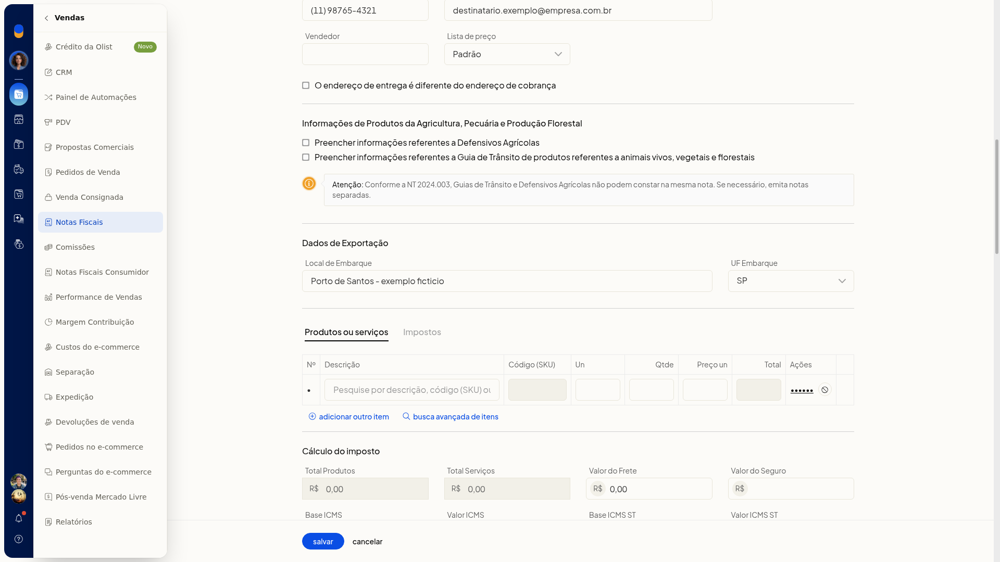

Nota fiscal de exportação
No ERP da Olist, a exportação é um Tipo de Saída da nota fiscal. Ao escolher essa opção, você preenche os Dados de Exportação com o local e a UF de embarque.
Pré-requisitos
- Tenha o local de embarque e a UF de embarque.
Importante
- A exportação não fica no campo Finalidade da nota. Ela é escolhida em Tipo de Saída.
Instruções
-
Acesse Vendas > Notas Fiscais.
-
Clique em incluir nota fiscal.
-
Em Tipo de Saída, selecione E Exportação. As opções desse campo são N emissão própria, E Exportação, T terceiros e X XML.
-
Preencha Local de Embarque e UF Embarque. A seção Dados de Exportação passa a ser exibida com esses campos. Exemplo de preenchimento: Porto de Santos - exemplo ficticio e SP.
